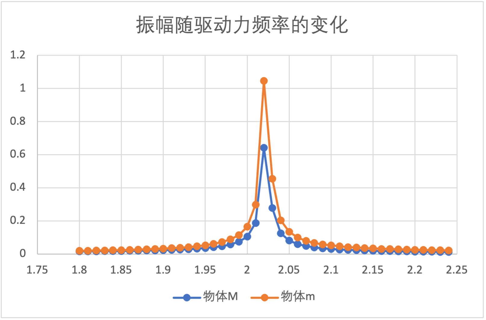
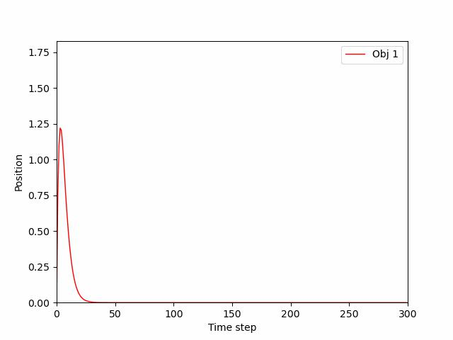

计算机模拟物理作业
2023年10月18日
夏泽宇 2021012242
1.1
设左侧弹簧长度为l1,M初始位置为x1。中间弹簧长度为l2，m初始位置为x2。可列出运动方程:
m1dt2d2x1m2dt2d2x2=−k1(x1−l1)+k2(x2−x1−l2)=−Asin(ωt)−k2(x2−x1−l2)
令X=[x1x2]，M=[m100m2]，K=[−k1−k2k2k2−k2]，则有MX′′=KX+b
共振频率仅有系统本身决定，因此可不考虑由外力带来的影响，即上式中的b项，仅考虑线性方程组MX′′=KX
线性方程组可变形为X′′=M−1KX
注意到M−1K可逆，因此可对角化为P−1DP，其中D=diag{λ1,λ2,⋯}
因此由PX′′=DPX
令Z=PX，有Z′′=DZ，即zi′′=λizi,i=1,2，可得zi=Aeλix+Be−λix
代入数值得M=[200010]，K=[−160010001000−1000]，M−1K=[−8010050−100]
M−1K的特征值λ1=−18.5857,λ2=−161.4143
z1z2=Ae18.5857ix+Be−18.5857ix=Asin(4.311x)+Bcos(4.311x)=Ae161.4143ix+Be−161.4143ix=Asin(12.705x)+Bcos(12.705x)
因此固有频率ω1=4.311 rad/s，ω2=12.705 rad/s。当驱动力为这2个频率时会发生共振
ω=4.311 rad/s时，物体运动随时间变化的x−t图像如下：

ω=12.705 rad/s时，物体运动随时间变化的x−t图像如下：

通过分析共振频率附近频谱的振幅，可得到以下图像
在共振频率ω=4.311 rad/s，即f=2πω=0.686附近的振幅−频率关系如下

在共振频率ω=12.705 rad/s，即f=2πω=2.022附近的振幅−频率关系如下

可见在共振频率附近，振幅会显著增大，且理论计算值与模拟值相当一致
1.2
将外力改为矩形波，即：
f(t)=⎩⎨⎧A−A,kT≤t<(k+21)T,(k+21)T≤t<(k+1)T
在模拟中取A=5,T=f1。在2个振动频率附近的振幅−频率关系见下图。
在共振频率f=0.686附近的振幅−频率关系如下：

在共振频率f=2.022附近的振幅−频率关系如下：

可以看出在矩形波的作用下，由于系统不变，共振频率仍为f=0.686Hz和2.022Hz。但由于驱动力的不同，整体振幅发生了变化。由于矩形波作用的力为定值，总体功更大，因此系统的振幅也更大。
2.1
对于该运动方程
dt2d2x=−ω02x−γdtdx
代入特征方程λ2+γλ+ω02=0
求根，得λ1,2=2−γ±γ2−4ω02=−2γ±4γ2−ω02，x(t)=c1eλ1t+c2eλ2t
在欠阻尼状态下，γ2−4ω02<0
x(t)=e−2γt(c1cosω1t+c2sinω1t)=e−2γtAcos(ω1t+ϕ)，其中ω1=ω02−4γ2，因此共振频率即为ω02−4γ2≈2.9896 rad/s
模拟得到的运动轨迹如下图

2.2
临界阻尼系数即满足ω02−4γ2=0的γ值。在本题中γ=2ω0=6，模拟得到的图像如下
